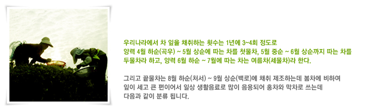

우전차(雨前茶)는 곡우(穀雨)전에 채다(採茶)하여 만든 수제차(手製茶)로 가장 고급차이며, 한겨울의 추위를 이기고 올라온 차의 첫 잎으로
정성스럽게 따서 만들어 차의 맛과 향이 싱그럽고 그윽하며 생산량이 극히 적기 때문에 한정 수량만 생산됩니다.
세작(細雀) 명차는 5월 상순에 잎이 다 펴지지 않은 창(槍)과 기(旗)만을 따서 만든 차입니다.
차잎 크기가 참새 혀 같다고 하여 작설차(雀舌茶)라고도 하며 가장 대중적으로 선호하는 차로 색, 향, 미를 골고루 즐길수 있습니다.
중작(中雀) 신차는 양력 5월 중순까지 채취한 차로 잎이 좀더 자란 후 창과 기가 펴진 잎을 한두장 따서 만들며 색과 맛이 넉넉한 좋은 차입니다.
대작 입하차는 5월 하순에 채다한 차잎으로 만든 녹차잎이며 중작보다 더 굳은 잎을 따서 만든 거친차로 녹차 성분을 풍부하게 함유하고 있습니다.
이 시기는 낮의 길이가 길어지면서 기온 또한 올라가 탄닌이라는 성분이 많아져서 약간 떫은 맛이 느껴지는 차입니다.
엽차는 굳은 잎이 대부분으로 숭늉대신 끓여 마시는 차입니다.
녹차의 등급
홈 > 녹차정보 > 녹차의 등급
